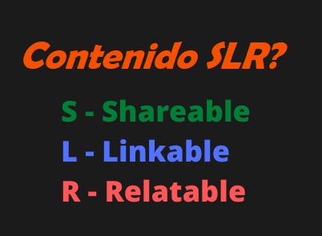
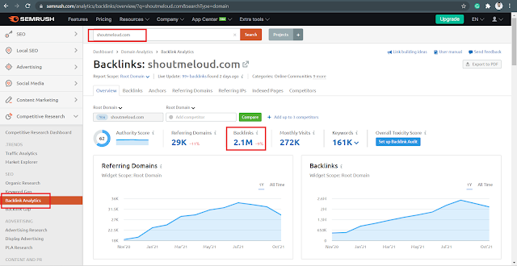
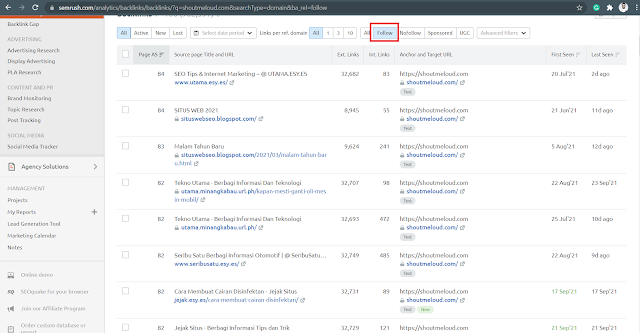
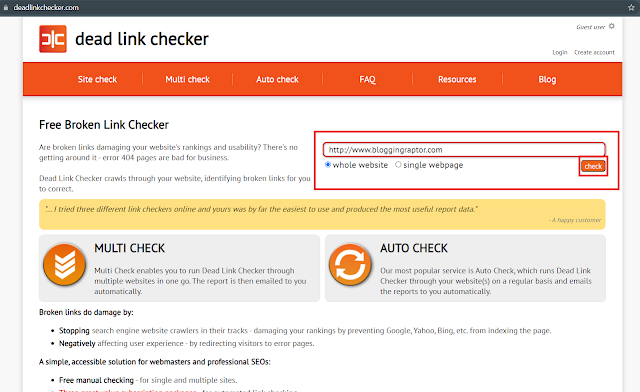

Una de las estrategias más importantes para tener éxito con el SEO es la construcción de enlaces .
Entre los más de 170 factores de clasificación utilizados por Google , dos de ellos tienen el mayor impacto:
Calidad del contenido , capacidad de responder a la intención del usuario y & nbsp; número de backlinks recibidos.
Por este motivo, explicaré mejor qué son los backlinks y por qué tienen tal impacto en una estrategia de SEO .
Tal vez tenga un excelente contenido en su sitio, una gran velocidad de carga, pero aún no se muestra en la parte superior de los motores de búsqueda.
La falta de backlinks podría ser la razón principal.
- ¿Qué son los vínculos de retroceso?
- Cosas para recordar al crear vínculos de retroceso
- Diferentes tipos de backlinks y en qué tipo enfocarse?
- ¿Cuáles son los beneficios de crear vínculos de retroceso?
- Cómo crear backlinks (14 formas)
¿Cuáles son los backlinks?
Un backlink es un vínculo creado de un sitio web a otro. Motores de búsqueda como Google utiliza la calidad y la cantidad de vínculos de retroceso como una señal de clasificación. Por lo tanto, La adquisición de backlinks es una estrategia fundamental en SEO .
Actualmente es prácticamente imposible posicionarse en la parte superior de las palabras clave con un alto volumen de búsquedas y mucha competencia en la página de resultados (SERP) .
Los motores de búsqueda entienden los backlinks como si fueran una indicación, después de todo, si otro sitio se ha vinculado al tuyo, es porque creen que tu contenido es de calidad.
Así, con cada enlace recibido, los sitios ganan autoridad. Cuanto mayor sea su autoridad , mayores serán sus posibilidades de lograr una buena clasificación.
Pero, ¿es suficiente obtener backlinks de cualquier sitio para ganar autoridad?
¡Ciertamente no! Veremos más adelante cómo identificar un backlink de calidad , pero primero, veamos en la práctica el poder de influencia de los enlaces.
Cosas para recordar al crear Backlinks
-
Nunca intercambie vínculos de retroceso : significa que nunca intercambie backlinks con el sitio en el que han creado backlinks, como el Algoritmo de clasificación de Google es realmente poderoso, rastrean esos enlaces y no se consideran como un backlink de calidad. Por lo tanto, esto puede generar un impacto negativo en el SEO de su blog.
-
No compre backlinks : backlinks que se crean automáticamente (las personas enlazan a su contenido, ya que lo encontraron útil) o usted crea manualmente son enlaces buenos y de calidad. Mucha gente vende varios backlinks para algunos cobrar, pero no es la forma correcta de crear vínculos de retroceso, como si ese vendedor estuviera creando backlinks en sitios con baja DA (autoridad de dominio) o con alta puntuación de spam, se creará un impacto negativo en la clasificación de su blog en SERPs . Entonces, significa lidiar solo con vendedores de confianza.
-
Deje de hacer comentarios spam en blogs : nuevos blogueros incluso yo cuando Comencé mi primer blog, y cuando me enteré de los backlinks solía hacer esto, pero afecta negativamente al SEO de nuestro blog . Entonces, recomiendo evitar esto, pero una cosa que puede hacer es comentar sobre diferentes sitios de alta autoridad no solo de un solo sitio .
-
Intente siempre crear vínculos de retroceso Do-Follow - Esto siempre debe crear do-follow backlinks, la mayoría de los nuevos blogueros crean backlinks sin seguimiento, ni siquiera saben qué son Do-follow & backlink sin seguimiento, ya que el algoritmo de clasificación de Google no considere el enlace NoFollow en el factor de clasificación. Bueno, ya había compartido un artículo detallado. sobre - ¿Qué son los backlinks Do-Follow y No-Follow?
Ejemplo de enlace Do-Follow –
< a href=”https://cris01j.tk”>Blogging Cris </a>
Ejemplo de enlace de No-Follow –
<a href=”https://cris01j.tk” rel=”
nofollow
“>Blogging Cris</a>
El enlace que hace referencia a un“ nofollow ” no hay enlaces de seguimiento, como puede ver arriba.
- Cree vínculos de retroceso con un texto de anclaje adecuado : este también es un factor importante debe tener en cuenta al crear backlinks, que crean backlinks con texto de anclaje adecuado, por ejemplo: está creando un backlink en uno de sus artículos ( ¿Qué es el SEO en la página? ).
<a href=” https://www.cris01j.tk/2021/mejores-nichos-de-marketing-de-afiliados.html “> ¿Cuales son los mejores nichos? </a>
Crea un buen impacto en la clasificación de su artículo / publicación de blog en SERPs . Como su backlink tiene su palabra clave principal. Entonces, el algoritmo de clasificación de Google toma mientras muestra los resultados de la búsqueda al usuario, lo que lo llevará a una posición más alta en las SERP.
- Cree backlinks en sitios de autoridad : intente siempre crear backlinks en sitios que tienen un alto DA & amp; PA en comparación con el tuyo, esto ayudará a su sitio a obtener buenas clasificaciones en SERP, ya que tiene backlinks en sitios de alta autoridad, da una indicación a los motores de búsqueda de que su sitio tiene un buen contenido, por eso ese sitio de alta autoridad le ha dado un backlink a su sitio.
-
Evite los sitios con altas puntuaciones de spam : nunca cree backlinks en sitios con puntuaciones altas de spam, siempre creará un impacto negativo en el SEO .
Entonces, espero entender muy bien, que lo que necesitas considere al crear vínculos de retroceso para su sitio.
Diferentes tipos de backlinks
A partir de aquí, consideremos que los backlinks recibidos son buenos backlinks, ¿OK? Sin embargo, es importante que esté constantemente atento al tema anterior. Nunca dejes de monitorear tus acciones y todo lo que le sucede a tu marca.
Entonces, ¿cuáles son los diferentes tipos de backlinks? Bueno, solo hay dos tipos de backlinks (Do-Follow y No-Follow) que ya discutimos anteriormente, y tuve ya compartí un artículo detallado sobre – No Disponible :/
Pero, el punto principal es en cuál enfocarse , la respuesta simple a esta La pregunta es " Hacer-Seguir ". Como comentamos anteriormente en este artículo, esa búsqueda los motores cuentan los backlinks Do-Follow más en el factor de clasificación, ya que los enlaces Do-Follow se crean para guíe y navegue a los usuarios / lectores de un sitio / página a otro.
Mientras que los enlaces de No seguir son solo para fines de referencia, es por eso que mientras Al crear un enlace de No seguir, le damos el atributo "rel" (relación) para marcar ese enlace como un no seguir, vea el siguiente ejemplo de nuevo- & nbsp;
<a href=”https://cris01j.tk” rel=”
nofollow
“>Blogging Cris</a>
¿Cuáles son los beneficios de los BackLinks?
Esta es una muy buena pregunta, ¿cuáles son los ¿Beneficios o importancia de los backlinks?
Obviamente, todos en el campo de los blogs dicen que cree vínculos de retroceso para su sitio web, ¿pero por qué? ¿Los backlinks afectan la clasificación de tu blog?
Obtener vínculos de retroceso a su sitio web es una excelente manera de mejorar El rendimiento de SEO y & nbsp; puede ayudar a su blog de varias formas.
Veamos ahora cuáles son las beneficios de crear backlinks--
Ayuda a conseguir una posición más alta en SERPs (Página de resultados del motor de búsqueda).
-
Cree un impacto positivo y mejore el SEO fuera de la página de su sitio.
-
Esto conduce a obtener más tráfico.
-
Ayuda a que sus nuevas páginas y publicaciones se indexen en el motor de búsqueda más rápido.
-
Ayuda a desarrollar la autoridad de su blog y la autoridad de dominio .
How to Create Backlinks
Yo diría que esta es una pregunta de un millón de dólares para todos los blogueros, ya que obtener vínculos de retroceso a su sitio web puede mejorar su clasificación en los motores de búsqueda, crea un impacto positivo en el SEO fuera de la página , genera más tráfico orgánico, indexación rápida de las publicaciones o páginas de su blog, mejore su marca y la Autoridad de dominio & nbsp; que ya comenté anteriormente.
- Crear contenido SLR
- Redacción de artículos / publicaciones de invitados
- Robar backlinks de competidores
- Encuentra enlaces rotos de competidores y comparte tus enlaces con ellos.
- Convertir menciones de desvinculación en menciones de enlace
- Blog comentando blogs de alta calidad
- Usar foros
- Q&Sitios
- Acciones de redes sociales
- backlinks Web 2.0
- Vinculación interna
- Ponerse en contacto con los autores de grandes blogs / sitios web de noticias
- Técnica de rascacielos
- Crea imágenes o infografías vinculables
Crear contenido SLR
|  |
| ¿Qué es el contenido SLR? |
Escribir artículo / artículo invitado
Robar backlinks de competidores
|  |
| ShoutMeLoud Backlink Analysis |
|  |
| ShoutMeLoud Backlinks |
Encuentre enlaces rotos de sus competidores & Comparte tus enlaces
|  |
| Dead Link Checker |
Conversión de menciones de desvinculación en menciones de enlace
Blog comentando blogs de alta calidad
Usar foros
Uso de sitios web de preguntas y respuestas
- Quora.com
- YahooAnswers.com
- Stackoverflow.com
- QsAns.com
- QuestionHub.google.com/
- Ehow.com
- Askdeb.com
- WikiAnswers.com
Acciones de redes sociales
Compartir los artículos de su blog en las redes sociales también le da un backlink a su sitio,
nuevamente, es un backlink No-Follow, pero ayudará a generar algo de buena calidad
tráfico a su blog.
Puede utilizar los principales sitios de redes sociales como:
- Tumblr
- Flickr
- Yara book
Estos sitios tienen una gran cantidad de tráfico diario. y obtener indicaciones sociales en su blog también ayuda a mejorar su autoridad del sitio, lo que conducirá a un aumento en las clasificaciones.
Web 2.0 Backlinks
Es posible que haya escuchado o esté pensando que ¿Qué son los backlinks de la Web 2.0?
Permítanme aclarar esta duda, en palabras simples, backlink Web 2.0 es una forma de construcción de vínculos en en el que registras diferentes sitios que te proporcionan un microblog para subir contenido con un subdominio a tu blog.
Permítanme explicarlo más claramente con un ejemplo:
Como sabes, hay muchos sitios web que ofrecen un blog de subdominio como
WordPress, Blogger, Wix, Medium, etc.
Cuando crea un blog con un subdominio ( bloggingraptor.wordpress.com ) y agregue algo de contenido en ese blog, y también agregue algunos enlaces de referencia a su dominio principal ( bloggingraptor.com ) funciona como un backlink Web 2.0.
Esta es la forma más eficaz y rápida de obtener backlinks Do-Follow para tu blog, ya que eres el único propietario de ese blog de subdominio, por lo que puedes dar backlinks sin agregarle ninguna etiqueta No-Follow.
Aquí hay una Lista de sitios de envío de Web 2.0 para crear su Web 2.0
- WordPress.com
- Blogger.com
- Sites.google.com
- Medium.com
- Quora.com
- Joomla.com
- Wix.com
- Weebly.com
- Squarespace.com
- Tumblr.com
- Rediff.com
- Box.com
- Zoho.com
- Last FM
y muchos más, puede encontrarlos en Google . a través del cual puedes crear backlinks simplemente creando perfiles normales como Facebook y otras cuentas de redes sociales.
Pero no se limita a agregar enlaces en el contenido, puede crear un sitio web completo, autor, y perfiles de usuario y agregue el nombre de dominio de su blog principal en él para obtener otro backlink.
Una vez más, no se exceda. Recomendaría crear solo 1-2 enlaces por mes desde estos sitios. Por lo tanto, no afectará su SEO .
Vinculación interna
Los enlaces internos son como backlinks pero dentro de su propio sitio web.
Son enlaces que van de una página de un dominio web a otra página del mismo dominio.
Se ven con mayor frecuencia en los menús de navegación, las barras laterales y los pies de página, pero también
cuerpo del artículo.
Los motores de búsqueda miran muchas cosas cuando intentan determinar qué páginas clasificar. Una de las cosas que analiza son los enlaces internos.
A través de enlaces internos , su sitio garantiza sus propias páginas, pero es realmente útil para motores de búsqueda y SEO !
una página con más enlaces internos es más valiosa a los ojos de su propio sitio.
Una vez más, no se exceda. Simplemente haga enlaces internos de publicaciones o páginas con las que se pueda relacionar. Entonces te ayudará de lo contrario, si coloca algún enlace en cualquier página, puede afectar negativamente al SEO de su sitio.
Ponerse en contacto con los autores de grandes blogs / sitios web de noticias
Esta forma de obtener backlinks puede ser un boom para tu blog. Lo que debe hacer es encontrar grandes blogs o sitios web de noticias que hayan escrito artículos relacionados con las publicaciones de su blog, y debajo de cada artículo, verá el cuadro de perfil del autor.
De eso es de lo que estoy hablando, puede contactar directamente a los autores de los grandes sitios web, pero no solicite un backlink directamente.
Supongamos que ha escrito un breve artículo sobre " Qué es SEO " y encontraste un artículo en Google relacionado con él, y en ese artículo, el autor usó el término SEO , pero no lo explicó o no agregó un enlace.
No se preocupe, aquí hay una plantilla de correo electrónico profesional que he creado para usted, y que yo personalmente uso.
Entonces, lo que puede hacer es enviarles un correo electrónico o un mensaje en su cuenta de redes sociales como este:
Hola Sr. / Sra. XYZ.
Estaba recopilando información sobre SEO en Google y encontré su " SU ENLACE DE ARTÍCULO " y fue simplemente increíble de leer y realmente útil para sus lectores. Has hecho un gran trabajo.
Pero, una cosa más que encontré en el artículo que no ha explicado brevemente, Eso podría resultar confuso para los lectores si no supieran qué es SEO .
Y estoy muy feliz de decir que también tengo un blog " TU NOMBRE DE BLOG " donde escribo y comparto artículos relacionados con Blogging & SEO , y tengo un excelente y breve artículo sobre SEO " SU ENLACE DE ARTÍCULO ", compruébelo y, si lo encontró útil, agregue el enlace a su artículo, para que los lectores le den más valor.
Saludos,
TU NOMBRE
DESIGNACION
Créame, este método funciona de maravilla. Tengo una blog de micro nichos , y yo había creado alrededor de 4 vínculos de retroceso con la ayuda de este método. y todos ellos son de alta calidad & sitios de autoridad.
Bueno, también envié mensajes de texto a 11 autores , pero obtengo 4 vínculos de retroceso Do-Follow después de acercarse a 11 autores no está tan mal. Por lo tanto, puede intentar lo mismo para obtener vínculos de retroceso para su sitio / blog .
Técnica de rascacielos
El término " Técnica de rascacielos " fue introducido por
Brian Dean
(propietario de Backlinko ).
En palabras simples, significa crear contenido excepcional, mejor y más atractivo que ya está
popular o en demanda.
- Ayuda a aumentar la cantidad de backlinks de calidad de su blog.
- Aumenta la autoridad de dominio de su blog.
- Genera tráfico adicional a su blog.
- Ayuda a obtener primeras posiciones en las SERP.
- Crea buenas relaciones personales & nbsp; con otros blogueros.
- Aumenta los comentarios de su blog.
- Más acciones e interacciones en redes sociales.
Cree imágenes e infografías enlazables.
 |
| Source: Pixabay |
Preguntas frecuentes sobre los backlinks
¿Cómo comprobar los backlinks del sitio web?
¿Qué son los backlinks?
¿Cómo obtener backlinks?
- Crear contenido SLR
- Redacción de artículos o publicaciones de invitados
- Robar vínculos de retroceso de la competencia
- Encuentra enlaces rotos de competidores y comparte tus enlaces con ellos.
- Convertir menciones de desvinculación en menciones de vínculos
- Blog comentando blogs de alta calidad
- Uso de foros
- Preguntas y respuestas sobre sitios & nbsp; & nbsp;
- Recursos compartidos en redes sociales
- Enlaces de retroceso Web 2.0
- Enlace interno
- Cómo ponerse en contacto con los autores de grandes blogs / sitios web de noticias
- Técnica de rascacielos
- Cree imágenes o infografías vinculables